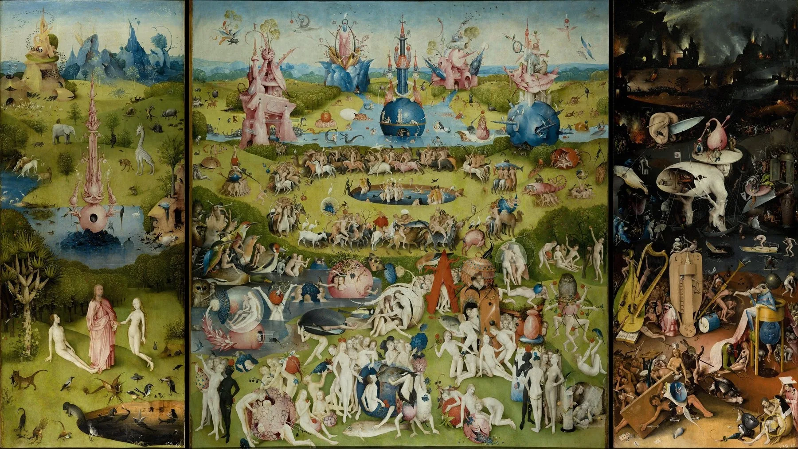
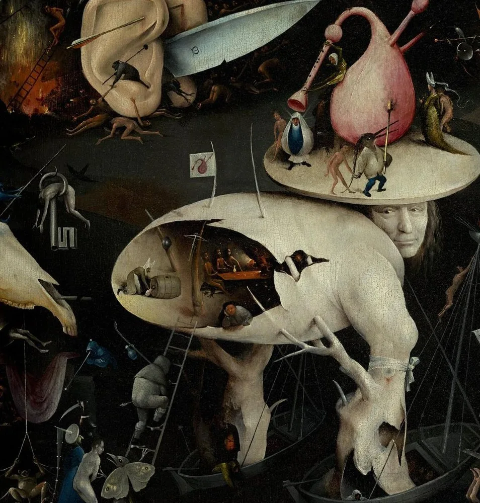
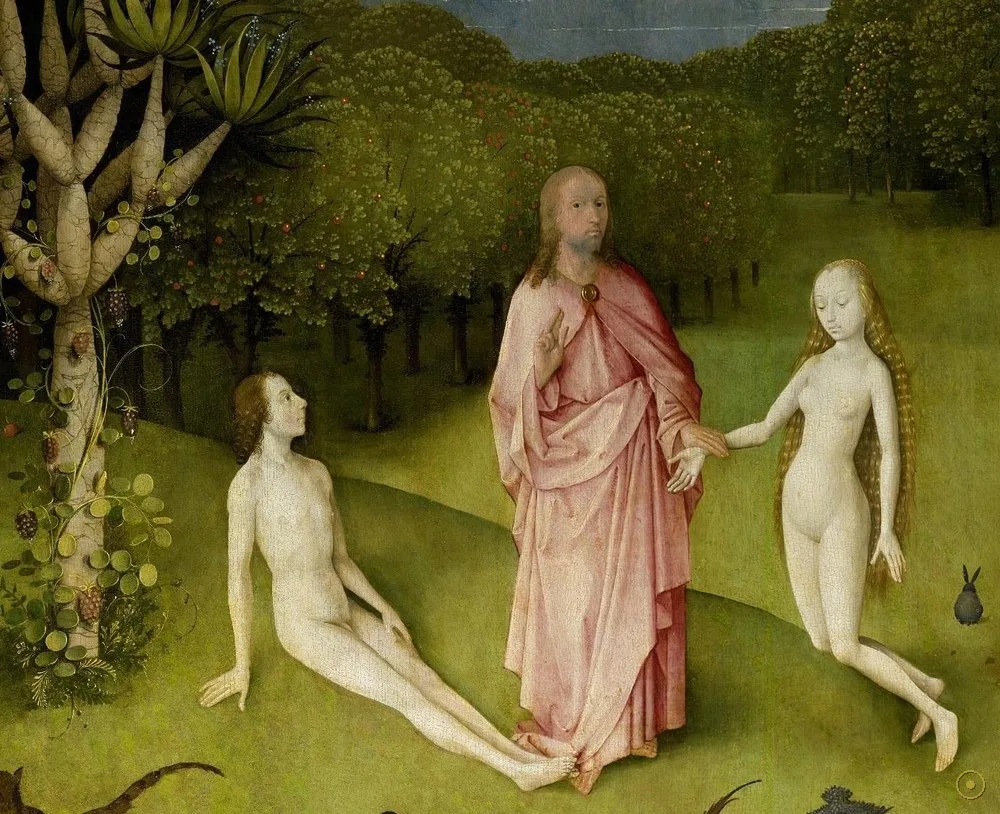
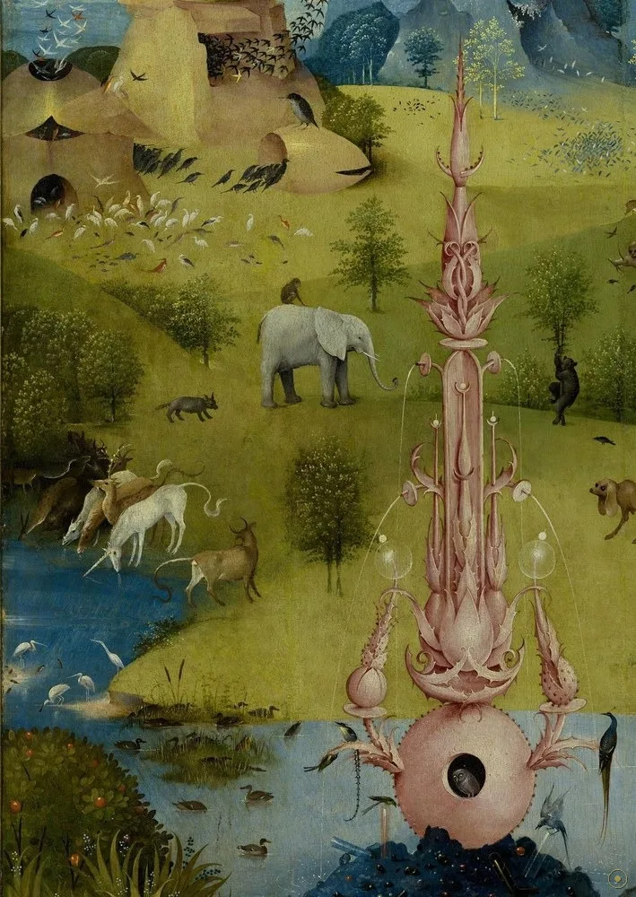
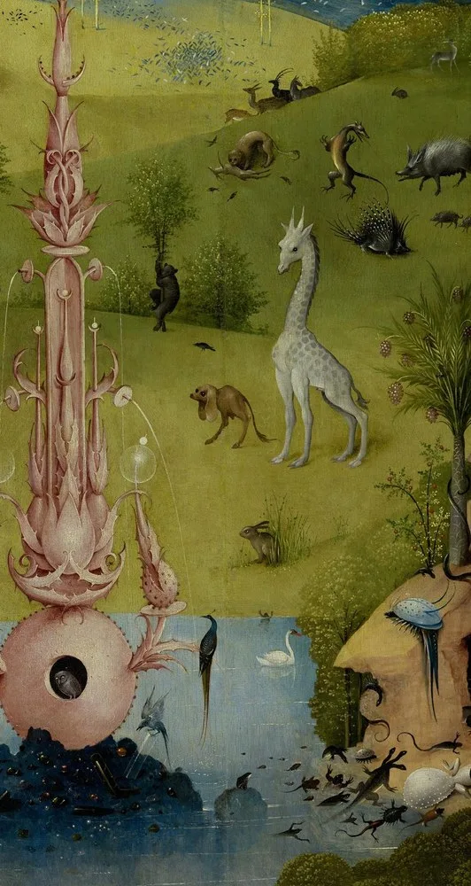
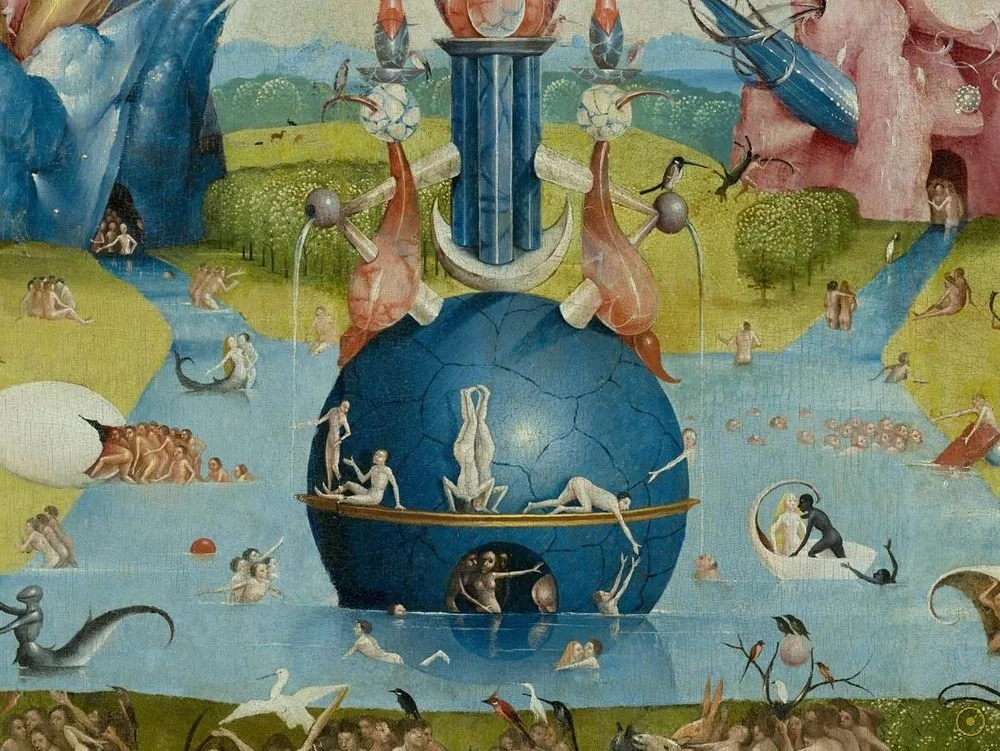
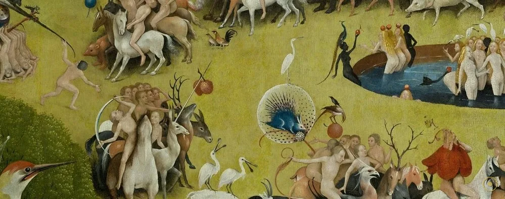
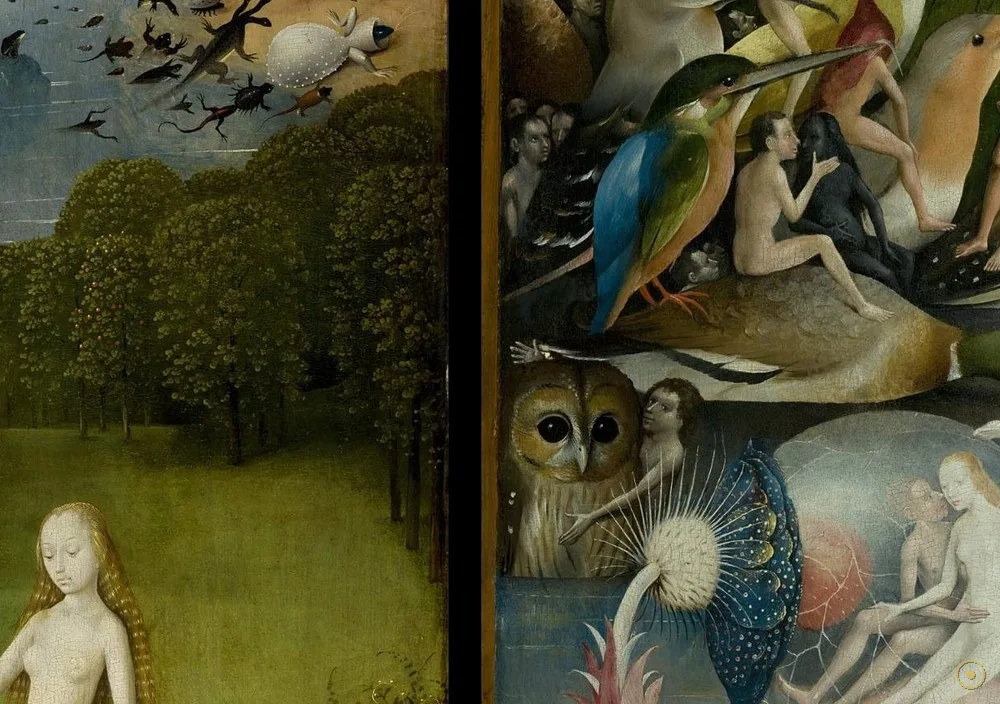
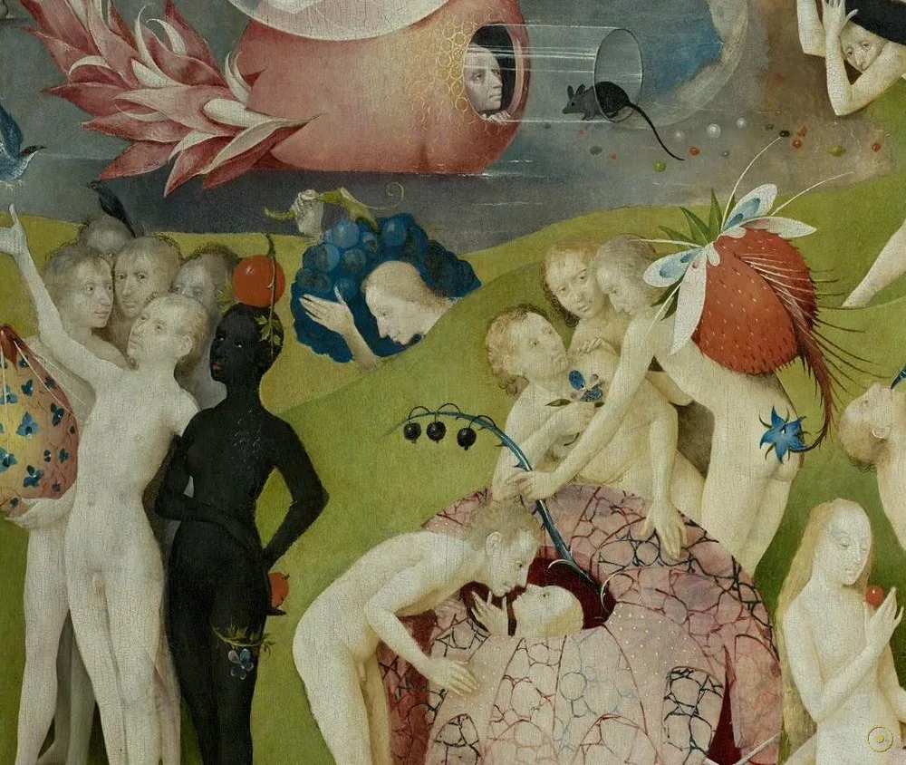

本页面展示的画作包含 艺术人体 / 裸体 内容。所录作品均为美术馆级公有领域馆藏，仅作艺术欣赏与学习之用，不含任何低俗或违规意图。
若您未满 18 周岁，或对此类内容感到不适，请点击「返回画廊」。点击「进入欣赏」即表示您已知悉上述说明，并同意仅作艺术欣赏之用。
大约 1490 到 1510 年间，尼德兰画家博斯画下一组三联画：左扇是上帝把夏娃引见给亚当的伊甸园，中扇是成千上万裸身男女嬉游其中的「人间乐园」，右扇却是一座由乐器、刑具与怪物构成的黑暗地狱。它没有留下一句解释，五百年来却让无数人着迷、争论——这究竟是一场天真享乐的赞歌，还是一则关于诱惑与惩罚的警告？
画板平时是合拢的：外侧的两扇上，画着一颗悬浮在黑暗中的透明地球，正是《创世记》里「第三天」大地初生、尚无人类的样子。只有当观者把它打开，三个世界才依次展开——先伊甸，再乐园，最后地狱。这种「开合」本身就是一场仪式：你亲手打开了一扇通往命运的门。
最勾人的是中扇。成千上万的裸体男女在花园里嬉游、骑兽、采果、钻进玻璃球与贝壳，巨型的水果、鸟与鱼比人还大。它到底是人类堕落之前的纯真乐园，还是纵欲将招致惩罚的预演？学界至今两说：一派读作「警告」，一派读作「失落的美好」。博斯把答案藏了起来。
右扇则毫不含糊：暗夜里，一座乐器与刑具搭建的「音乐地狱」正在上演——被巨型鲁特琴压住的罪人、顶着大蛋壳的「树人」、远处燃烧的城市。博斯用他那个时代最熟悉的道德符号，把「罪与罚」画成了一场超现实的噩梦，也因此被二十世纪的超现实主义者奉为远祖。
—— 据马德里普拉多博物馆（Museo del Prado）官方释读及主流艺术史研究（转译）
博斯没有告诉人们这花园是天堂还是陷阱——他只是一笔一笔，把你自己的欲望画了进去。
从伊甸园的泉与兽，到乐园里的果、球与骑手，再到地狱里的城、树人与巨琴——三扇板各藏着不同的谜。点击光点，从世界的开端一路走到它的终局。

点击画面中的 ✦ 光点 查看画中细节 · 图片来源：Wikimedia Commons（公有领域）
从十六世纪王室的奇珍，到「超现实主义远祖」，再到当代的欲望图像——同一组画，在不同的年代被读成了完全不同的东西。
约 1490–1510 · 诞生
博斯生活在尼德兰南部的斯海尔托亨博斯（'s-Hertogenbosch），生平资料极少。他把当时流行的谚语、道德剧与布道意象，画成充满怪物与怪象的图像迷宫——「人间乐园」是其中最宏大、最莫测的一组。
➤1593–1939 · 王室珍藏
西班牙国王腓力二世钟爱博斯，1593 年前后此画被收入西班牙王室收藏，长期悬挂于埃斯科里亚尔修道院，历时三百余年；1939 年，它随博斯其余作品一同移入马德里的普拉多博物馆。
➤20 世纪至今 · 无尽的解读
二十世纪的超现实主义者把博斯奉为远祖；此后女性主义、精神分析与图像学研究不断加入，反而让「这花园究竟是乐园还是陷阱」变得更难有定论——它成了一座永远解不完的谜。

其一 · 五扇板的结构。这是一组三联画：合拢时，外板上画着「创世第三日」的透明地球；打开后才是伊甸园、人间乐园与地狱三界。观看方式本身，就是一次从创世到终局的巡游。
其二 · 尺寸与材质。中央板约 220 × 195 厘米，两翼各约 220 × 97 厘米，展开近 3.9 米宽，绘于橡木板上。如此尺幅在当时极为罕见，足以让观者「走进去」。
其三 · 没有说明书的谜。博斯几乎没有留下关于此画的文字，画中也没有一句注释；「警告诱惑」是主流解读，但「纯真乐园/失落的美好」之说同样著名。答案从未被写死。
※ 「腓力二世收藏与 1939 年入藏普拉多」「三联画与外侧创世地球」「中央板尺寸」均见于普拉多馆藏与艺术史记载；中扇「警告」与「乐园」两派解读并存，本页并列呈现。画中个别象征义（如猫头鹰、玻璃球）以主流图像学研究为参考，非唯一结论。
把这三扇板拆开，每个元素都带着双重含义：它可以是天堂的家具，也可以是地狱的伏笔。

红衣的上帝牵着夏娃走向亚当——第一桩婚姻，也是原罪的起点。

粉色的塔楼既是教堂也是喷泉，清水流入池中，万兽围绕。

长颈鹿、大象与虚构怪兽同处一园，乐园既像地球又像异星。

中扇的视觉中心，被解读为「欲望之泉」，人群绕它嬉闹。

全画最密集的区域：嬉游，还是不知羞耻的沉溺？

比人还大的草莓与果子，甜蜜里透着不安。

被玻璃球罩住的恋人——乐园像气泡一样，一触即破。
蛋壳为躯干、树根为腿的怪影，是地狱里最著名的谜。
博斯（约 1450–1516）来自尼德兰的斯海尔托亨博斯，生平记载稀少。以他为名的「博斯式」图像——怪物、混合体、荒诞比例——影响了一代代画家。
中世纪晚期流行道德剧、布道与谚语插图，常用夸张的怪物来警示罪与罚。博斯正是把这一整套「大众图像语汇」搬上了画板。
腓力二世是博斯的狂热收藏者，把《人间乐园》等作品收入王室，长期悬于埃斯科里亚尔；这段收藏史，也是此画得以完好留存的关键。
二十世纪，达利、恩斯特等超现实主义者公开推崇博斯；他也因此被不断「再发现」，成为跨越五百年的图像偶像。
博斯创作这组三联画（具体年代学界仍有分歧，通常定于 1490–1510 之间）。
首次见于文献记载——被列于拿骚的亨利的收藏清单之中。
西班牙国王腓力二世将其收入王室收藏，长期悬挂于埃斯科里亚尔修道院。
在埃斯科里亚尔度过三百余年后，移入马德里普拉多博物馆，直至今日。
成为普拉多最负盛名、也最被反复解读的作品之一，被视为超现实主义的远祖。